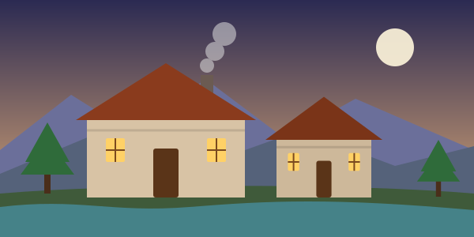
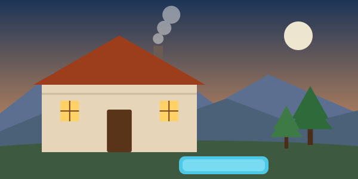
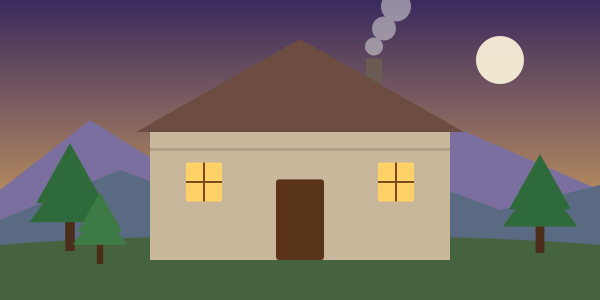
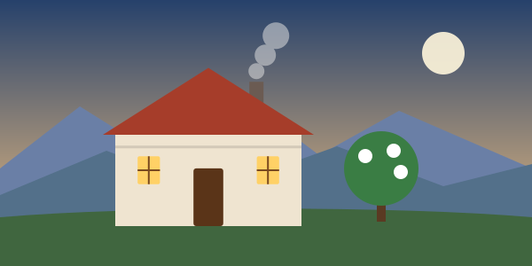
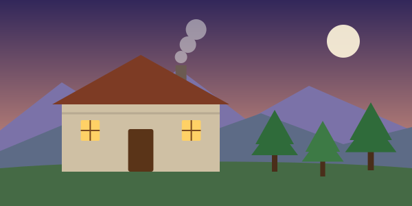
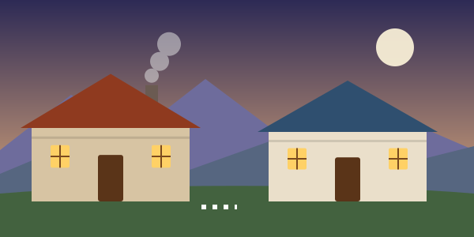
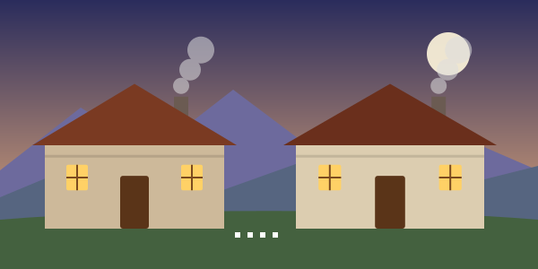

👨👩👧👦 Distribución del grupo
Opción 1 · 5 habitaciones
2 adultos
2 adultos
2 adultos
2 adultos
Opción 2 · 4 habitaciones
4 personas
2 adultos
2 adultos
4 personas
✅ Aparecen disponibles en Booking y Trivago
Resultados de la búsqueda del 15 al 17 de enero para 4 habitaciones, 8 adultos y 4 niños. El precio es el total de la estancia que muestra el buscador; confírmalo en el enlace antes de reservar.
Casa Rural Entrepinos
Los Olivos de José
El Rancho Gómez, chalet
La fortaleza de Bernuy
Mansión 5 hab. con jacuzzi y pádel
🏡 Casas donde cabe todo el grupo

Casa Rural El Molino I y II
📞 920 206 204 · 685 886 664
Llamar Ficha oficial Casasrurales.net EscapadaRural
Casa Rural Cascorro
Reserva por el formulario de la ficha.
Casasrurales.net EscapadaRural Travelocity
Casa Rural Braulio
Comprueba el máximo de plazas con el propietario.
Clubrural TusCasasRurales
El Magnolio

Casa Rural Los Guindales
Confirma si admiten las 12 personas.
Zonasrurales Casasrurales.net🧩 Mezclando casas (plan B)

Tío Peguero + El Cielo de Cebreros
Casa Tío Peguero (casco histórico, 9 personas) para las 3 parejas y los niños pequeños, y El Cielo de Cebreros (3 hab., 6 personas) para el resto. Los dos grupos quedan separados por unos 12 km.
Tío Peguero Listado
Tío Peguero + Casa del Médico
Casa Tío Peguero más La Casa del Médico I y II, a solo 2,8 km. Es la combinación más cercana; falta confirmar la capacidad de la Casa del Médico (desde 18–26 € por persona y noche, orientativo).
Ver casas